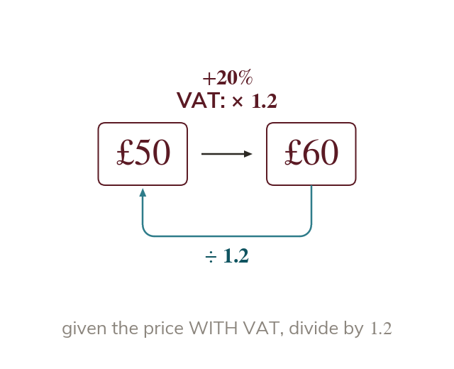

VAT as a reverse percentage problem
A price including VAT is of the pre-VAT price. So divide it by to find the price before VAT.
VAT (Value Added Tax) is added on top of a pre-VAT price, so a price including VAT is of the original pre-VAT price - the multiplier is
If you're given the price INCLUDING VAT and asked for the price BEFORE VAT, that given price is the new amount, not the original, so you divide by to recover the original pre-VAT price.
If you're given the price INCLUDING VAT and asked for the price BEFORE VAT, that given price is the new amount, not the original, so you divide by to recover the original pre-VAT price.